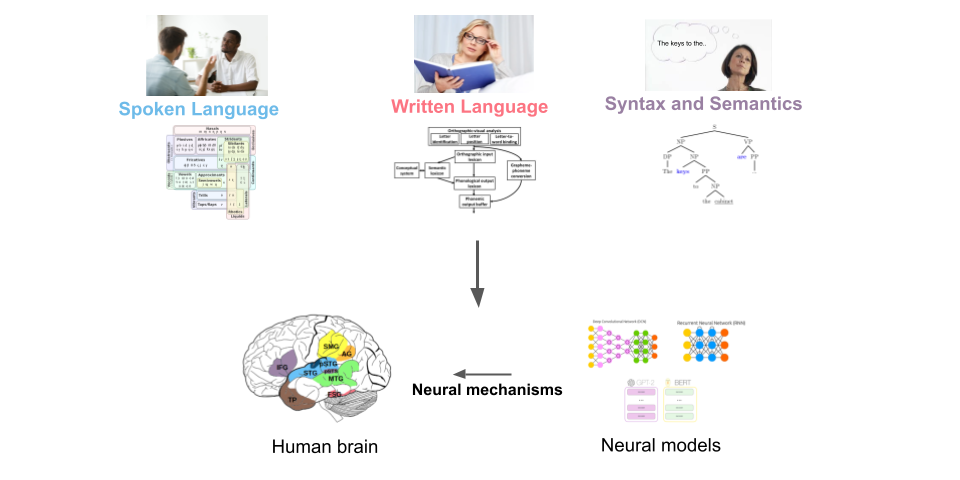

Linking Linguistic Theory and Brain Dynamics with Deep Neural Models
I am a cognitive neuroscientist and AI researcher working at the Cognitive Sciences and Psycholinguistics Lab (LSCP) in the Department of Cognitive Sciences at the École Normale Supérieure (ENS), Paris. I'm also a fellow of the Paris Artificial Intelligence Research Institute: My PR[AI]RIE Profile.
My research focuses on the neural mechanisms underlying language processing in the human brain, as well as neural AI models.
We study how various aspects of language - phonology, orthography, syntax and semantics - are neurally encoded in the human brain.
